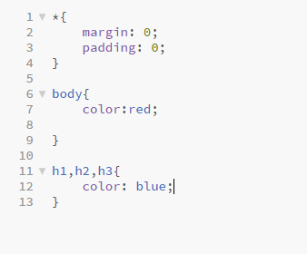
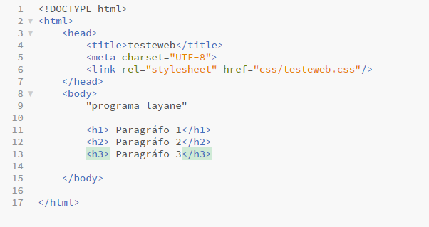
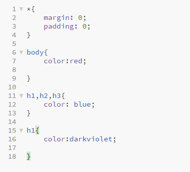
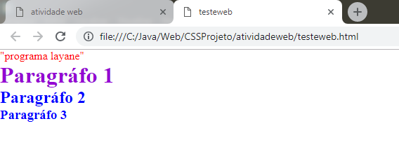
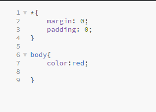
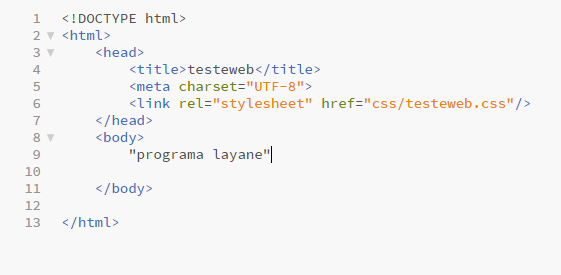

Perguntas:
a) É possível sobrepor à aparência (estilo) definida em regras CSS anteriores, mais genéricas, por regras mais específicas? Se possível, essa técnica tem nome? Exemplifique
Sim. Essa técnica é dada pelo nome "Override".
b) Caso definíssemos uma regra CSS mais geral para cabeçalhos de nível 1, 2 e 3, seguida de outra somente para o nível 1, como seria o comportamento do navegador? Descreva os vários cenários possíveis e o comportamento do navegador em cada uma delas
No primeiro caso, a regra será aplicada para todos os níveis. E no segundo caso, a regra especifica feita para a tag h1, será aplicada apenas nele. Ou seja, a especifica, ganha.
Exemplo:
Codigo aplicando aos 3 níveis
Codigo html
Resultado
Alterando o nível 1
Resultado
c) É sempre interessante otimizar o código CSS? Cite algumas vantagens
Sim. Otimizando o código,irá deixar tudo mais limpo.
d) Defina herança em CSS. Utilize, também, imagens para ilustrar tais definições.
Herança no css, é uma regra aplicada numa tag, e ser aplicada as demais. Exemplo: Se você deseja colocar uma regra dentro do marcador body, significa que todo o código que estiver dentro do body, vai ser aplicado a regra.
Exemplo:
Aplicando a herança
Codigo html
Resultado
e) Podemos sobrescrever características herdadas todas as vezes que desejarmos deixá-la mais específica?
Sim, fazendo um override específico para a tag desejada.